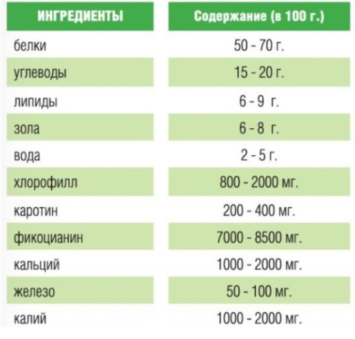
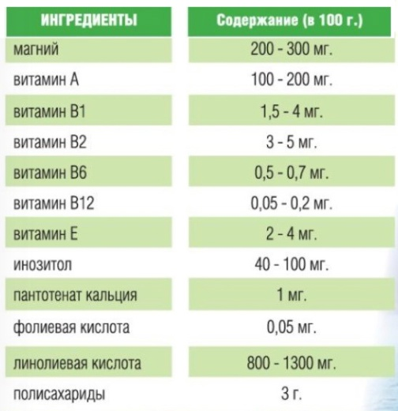

Что такое Спирулина
Спирулина является истинным питательным пищевым продуктом. Она не только богата филоцианином, поливитаминами, разнообразными минералами, линолевой кислотой, кератином, но и содержит огромное количество различных питательных веществ, таких как фолиевая кислота (витамин В9), полисахарид и другие. Доля всех этих веществ в организме человека бесценна. Тестирование показало, что эта водоросль обладает иммуномодулирующим действиемСпирулина является истинным питательным пищевым продуктом. Она не только богата филоцианином, поливитаминами, разнообразными минералами, линолевой кислотой, кератином, но и содержит огромное количество различных питательных веществ, таких как фолиевая кислота (витамин В9), полисахарид и другие. Доля всех этих веществ в организме человека бесценна. Тестирование показало, что эта водоросль обладает иммуномодулирующим действием
Спирулина для детей
Спирулина
– натуральный, созданный природой продукт, абсолютно опережает все известные натуральные продукты по содержанию и составу аминокислот (18 аминокислот, в том числе 8 незаменимых, ненасыщенных жирных кислот), рекордсмен по содержанию бета-каротина, витаминов (А, С, Е, В12, ВВ6, В2, В9), макро- и микроэлементов (Fe, Ca, Cu, Mg, Zn, P, Se). Спирулина содержит в своем составе столько ценнейших компонентов, сколько не имеет ни одно растение на нашей планете, при этом в спирулине отсутствуют какие-либо токсичные элементы. В спирулине выше, чем где-либо еще, содержание фикоцианина – белка с сильными антиоксидантными, противовоспалительными и противоопухолевыми свойствами.
Спирулина улучшает зрение
, прекрасно улучшает состояние кожи и структуру волос. Детям, страдающим аллергией, рекомендуется регулярный ежедневный прием спирулины.
Спирулина содержит огромное количество полноценного белка
, который легко усваивается, быстро насыщает растущий организм и дарит заряд энергии и бодрости.
Спирулина богата бета-каротином
, этот фактор укрепляет детскую иммунную систему, помогает детскому организму справляться с инфекциями.o В спирулине чрезвычайно богатое содержание цинка - необходимого при построении костной системы и повышении сопротивляемости к инфекциям.
Усваемость железа.
Дефицит железа в организме, а также нарушение усвоения, всасывания железа приводит к железодефицитной анемии у детей. Поэтому высокая биологическая усвояемость железа, содержащегося в спирулине, ставит ее на первое место среди средств повышения гемоглобина. В спирулине железа в 100 раз больше, чем в яблоках, редисе или капусте.
Спирулина содержит жирные кислоты омега-3- и омега-6-категорий
, необходимые для нормальной функции мозга, эти полиненасыщенные жирные кислоты помогают при кандидозах, сердечно-сосудистых заболеваниях, экземах и псориазе. В столовой ложке спирулины содержится 100 миллиграмм гамма-линоленовой кислоты, источником которой на Земле является только материнской молоко и спирулина.
Употребление спирулины увеличивает количество полезных бактерий
как лактобацилус, которые восстанавливают флору кишечника при дисбактериозе, улучшают пищеварение и усвоение пищи.
Спирулина – идеальное профилактическое средство
от более чем 300 заболеваний. Таким образом, регулярно употребляемая в пищу спирулина детям дарит крепкое здоровье и улучшает качество их жизни.
Спирулина детям, живущим в экологически неблагоприятных условиях. Спирулина содержит альгинаты, которые выбрасывают из организма тяжелые металлы, токсины и радиоактивные вещества. В условиях современной цивилизации способность спирально эффективно выводить из организма шлаки, токсины и радионуклиды особенно актуальна.


< Предыдущая статья
Следующая статья >